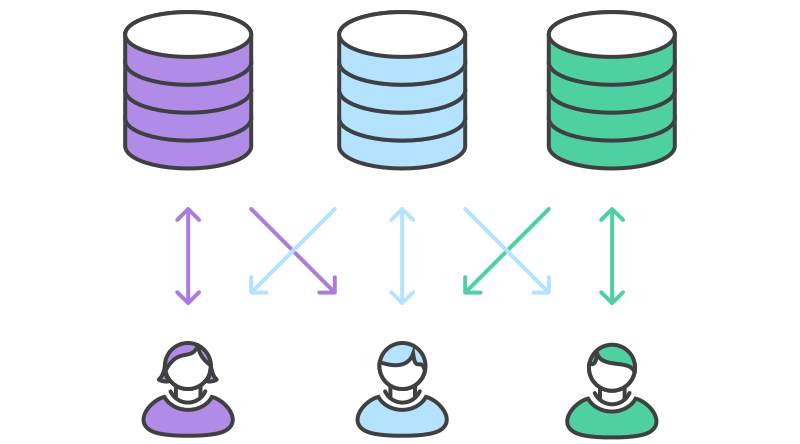

Intro to Git
But first,
WHAT IS VERSION CONTROL?
THINK OF GROUP WORK WITHOUT GOOGLE DOCS
So many different versions of your team's work. Each version in a different place!
IMAGINE SOMETHING BIGGER
A big class project.
A codebase.
Wikipedia.
Taking a closer look
Let's visit Wikipedia.
Every Wikipedia page, including the main page, has a special view. You can find it in the top right-hand corner of the screen: it says "View History". Pick a page -- any page -- and find the "View History" tab. Then click it.
This page shows you every change ever made to the page. These changes are saved as "diffs". Diffs are a list of the changes or differences between two versions of a file. If you want to learn more about diffs, try the OpenHatch diff and patch training mission.
Wikipedia displays diffs in its own particular way. Select two revisions and click "compare selected revisions" to view it.

(Click on the image to go to the diff itself.)
The diff includes information about:
- what got added (in blue) and what got deleted (in yellow)
- the lines of the documents the deletions were on
- who made the change
- when they made it
- why they made it - the "commit message"
- how to view the previous version and the new version
(click on the bolded "revision as of...")
Wikipedia runs on a piece of software called Mediawiki. That's one version control system. What others are there?
And what's the difference between a version control system and a repository and a host, anyway?
THE FORKING WORKFLOW
Many open source projects use the forking workflow.
When a user forks a project, they get their own copy to experiment and build in. If the user builds something cool they can ask the maintainer, using a pull request, to accept their modifications.
FORK THE PROJECT REPOSITORY

You and a friend decide to contribute to the Morris OpenHatch project.
CLONE
git clone [remote]

WORK ON FEATURES
git add [names of files you changed]
git commit -m"Useful comment the work what I did."
git pull upstream master
SHARE YOUR CHANGES
git push origin master
Make a pull request
CONTRIBUTION
Maintainer decides to accept pull requests and merge changes into the main projects.
SEE THE CHANGES
All of the developers can synchronize the newly updated codebase.
git pull upstream master
DEVELOPMENT CONTINUES

Pulling. Changing. Committing. Pushing. Merging.
Thanks!
Thanks for listening :-)
Questions?